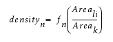

The Sample Data File describes the simulated versus measured data points for use with VT5 models.
Input for:
Generated by:
The sample data (samdata) file is a formatted text file consisting of lines of simulated and empirical measurements. This is an intermediate file used for batch model creation and model evaluation. These measurements correspond to the model fitness data generated by VT5 Center.
A sample data file must conform to the following restrictions:
Can either be a separate ASCII text file, or included inline in a setup file.
With the exception of the first line, the file represents a table of data with one row for each structure in a test pattern. The file contains no comments. Each line is separated by newline (return).
The first line is a header, and defines the total number of rows and the number of columns in each row:
rows columnsAll subsequent lines contain an array of numbers, each defining the value in the associated column of data.
The number of columns varies according to the number of CKERNEL convolutions in the model.
For some parameters, the definition varies according to model type.
Column |
Parameter |
CTR, VTR or VTR-E |
VT5 |
|---|---|---|---|
1 |
Imax |
first local maximum of intensity within the site. |
maximum intensity within a window of total width 2*searchRange (default searchRange = 0.5*lambda/NA) |
2 |
Slope |
maximum slope of intensity within site. If logslope option is on, it is the maximum slope of the log of the intensity. |
slope calculated at the reference threshold |
3 |
Islope |
intensity at the maximum slope. |
at the reference threshold |
4 |
Imin |
Not applicable (no Imin) |
the minimum value of the image within a window of total width 2*searchRange (default searchRange = 0.5*lambda/NA) |
5 |
Factor |
calculated at opc layer edge location. If slideTangentSites is on, calculated at the control point closest to location of maximum slope |
Factor calculated at the reference threshold |
(5+ i) for i= (1…n) |
di |
Not applicable |
density for Ckernel i |
N-4 |
empThresh |
actual threshold at which printing occurs (measured) |
actual threshold at which printing occurs (measured) |
N-3 |
modelThresh |
simulated threshold predicted by the model |
simulated threshold predicted by the model |
N-2 |
empEPE |
actual EPE (measured) |
actual EPE (measured) |
N-1 |
modelEPE |
simulated EPE predicted by the model |
simulated EPE predicted by the model formed by the thresh + bias polynomials |
N |
EPEv |
modelEPE |
simulated EPE predicted by the model formed by the thresh polynomial alone |
Where:
N = the number of columns
n = the number of CKERNELs
Density is defined as the area of the latent image of the structure normalized by the total kernel area, weighted according to the function specified for the kernel.

Where:
Areali = area of the latent image for the structure, which is the simulated image generated using a CTR model with threshold = reference threshold.
Areak = total kernel area
fn = function specified for the kernel
n = index of the kernel
When the image does not pass through the referenceThreshold, the xr value is chosen to be the point on the cutline which is closest to the referenceThreshold, and all image parameters are derived using this value of xr.